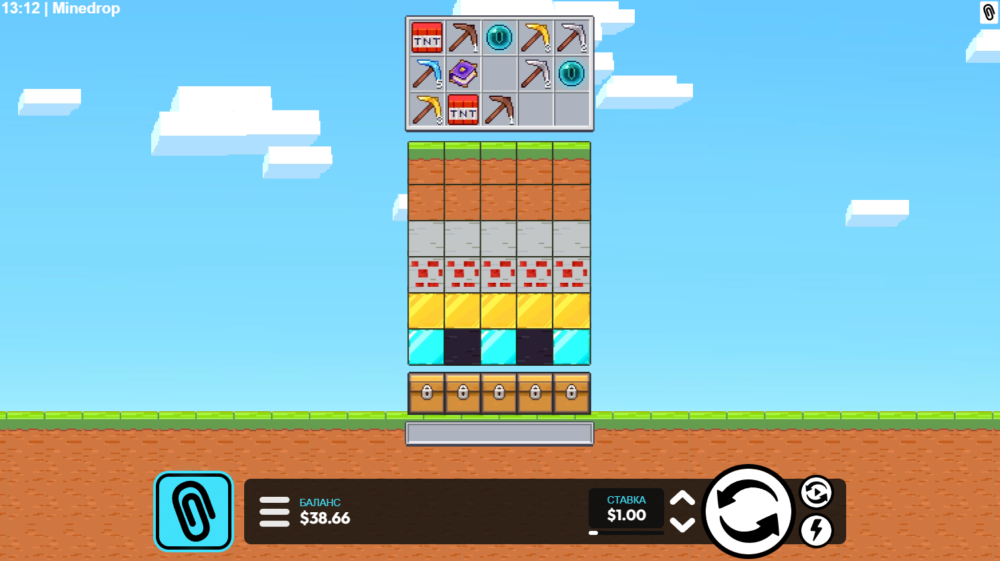

Mine Drop Slot: полный гид по игре, демо и бонусам

Mine Drop slot — это динамичный формат, который объединяет знакомую механику слота и логику прогресса в стиле шахты. Пользователь не просто запускает спины, а отслеживает, как раскрываются блоки, как меняется темп раунда и когда выгоднее закончить сессию. Такой подход делает mine drop game более вовлекающей, чем классические автоматы с линейными выплатами.
С точки зрения SEO и пользовательской пользы важно показать не только рекламу, но и структуру: где открыть mine drop demo, как безопасно play mine drop, какую выбрать mine drop strategy и какие условия обычно предлагает mine drop casino. Поэтому этот сайт построен как кластер, где каждая страница закрывает отдельный интент поиска.
Запросы типа mine drop online, mine drop играть и mine drop как играть часто приходят от новичков. Им нужен понятный вход: короткое объяснение правил, демо без риска и прозрачный переход к бонусам. Запросы про стратегию, наоборот, приходят от игроков, которые уже знакомы с логикой игры и хотят снизить дисперсию сессий. Мы разделили эти темы на отдельные URL, чтобы поисковые системы точнее определяли релевантность каждой страницы.
Если вы рассматриваете игру на деньги, сначала оцените доступные лимиты, скорость пополнения и правила вейджера. Затем сравните предложения по бонусам и только после этого переходите к регистрации. Такой порядок позволяет принимать решение на основе условий, а не только на эмоциях от быстрого старта. Для удобства CTA-кнопки в нужных разделах ведут на единый партнерский URL, как и требуется для консистентной аналитики.
Также в кластере предусмотрены материалы для смежного спроса: часть аудитории ищет mine drop crash или mines game в широком смысле, хотя конкретно здесь рассматривается отдельная игра mine drop slot. Мы добавили пояснения и перекрестные ссылки, чтобы пользователь мог быстро понять разницу форматов и остаться внутри сайта на релевантных страницах.
Почему этот SEO-кластер работает лучше одной страницы
- разделяет инфо-интенты: demo, how to play, strategy, bonus, online;
- повышает глубину просмотра через внутреннюю перелинковку;
- усиливает индексацию благодаря уникальным title/description и canonical;
- упрощает расширение семантики без переспама в одном документе;
- снижает отказ за счет понятной навигации и читаемой структуры.